Teil 1 · Didaktik 2.2 · Generation 534411b8fa941f9a

Im Abschluss verbindest du die zuvor untersuchten Schritte. Die passenden Anschlussformen zeigen Datentypen, während Zahlenlicht die wechselnden Inhalte darstellt. Eine passende Verbindung reicht deshalb noch nicht als Nachweis für eine richtige Antwort. Du prüfst Kontext, Gewichtswissen, K/V-Zwischenspeicher und äußere Quellen getrennt. Zum Abschluss gehören Gegenproben, das Lichterfest und die Fragen des Brückenbauer-Eids.
Baue die Andock-Polonaise, halte Vorhersagen fest und prüfe die Wirkung. Betrachte die Brücke anschließend zehn Sekunden ohne Figuren und formuliere den Brückenbauer-Eid.
Die neun Bögen gehören zu L01–L09. L00 lässt das Widerlager glimmen; L10 entzündet die Laternen. Du kannst den Datenfluss erklären und gleichzeitig seine Bildgrenzen benennen: Könnte das geraten sein? Stützt die Quelle die Antwort? Wer kann mitlesen? Das Lichterfest schließt die erste Reise vollständig ab.
Prüfe Form und Wirkung getrennt. Verlange Quellen für Sachbehauptungen und gemessene Werte für eine Modellabnahme. Die Figuren sind aufgeräumter als die Wirklichkeit; ein erfolgreiches Kartenbild ist keine Spieleabnahme.